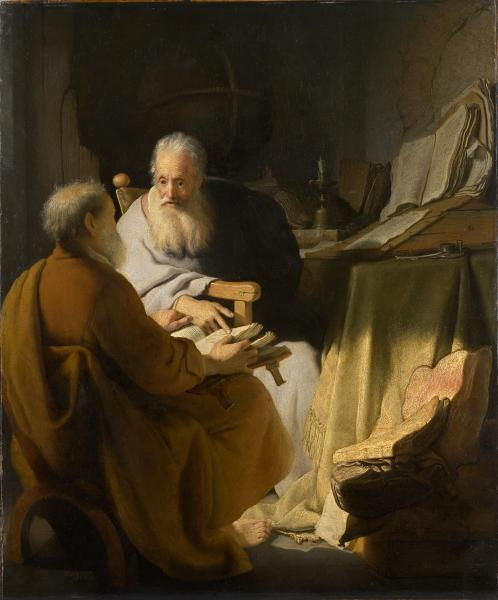

<head>
<meta charset="UTF-8" />
<meta name="keywords" content="drawing, painting" />
<meta name="description" content="drawings by Sunjy" />
<title>Sunjy</title>
<link rel="shortcut icon" type="image/x-icon" href="../../mImages/mCommon/favicon.ico" media="screen" />
<link rel="stylesheet" type="text/css" href="../../mCsses/mCommon/mCssA.css" />
<link rel="stylesheet" type="text/css" href="../../mCsses/mCommon/mCssB.css" />
<link rel="stylesheet" type="text/css" href="../../mCsses/mCommon/mCssC.css" />
<link rel="stylesheet" type="text/css" href="../../mCsses/mCommon/mCssD.css" />
<link rel="stylesheet" type="text/css" href="../../mCsses/mContent/mCssA.css" />
<link rel="stylesheet" type="text/css" href="../../mCsses/mContent/mCssB.css" />
<link rel="stylesheet" type="text/css" href="../../mCsses/mContent/mCssC.css" />
<link rel="stylesheet" type="text/css" href="../../mCsses/mContent/mCssD.css" />
</head>
<script type="text/javascript" src="../../mScripts/mContent/mContentAA.js" /></script>
<script type="text/javascript" src="../../mScripts/mContent/mContentAB.js" /></script>
<script type="text/javascript" src="../../mScripts/mContent/mContentAC.js" /></script>
<script type="text/javascript" src="../../mScripts/mContent/mContentAD.js" /></script>
<script type="text/javascript"></script> 
<script type="text/javascript">
document.write('<div class="mImgAbsolute"></div>');
/*
document.write('<p class="mFontSizeBColor" />From a white paper...</p>');
document.write('<table class="center"><tr><td>');
document.write('');
document.write('</td></tr></table>');
*/
</script>


<script type="text/javascript">
document.write('<p class="mFontSizeBColor" />Two Old Men Disputing</p>');
document.write('<p class="mFontSizeSColor" />“Two Old Men Disputing” by Rembrandt van Rijn depicts two seated men discussing the text of a book. One of the older men points to the page of the book held by the other man.<br><br>Rembrandt’s skill with dramatic lighting is shown with the brilliant shaft of sunlight falling diagonally to illuminate the object of interest while leaving most of the picture in darkness and shadow.<br><br>The contrasting light draws attention to the older man in white, whose beard and wrinkled skin have been beautifully painted. In the shadows, meticulous rendered can be seen in the candle, quill, the ink-stand, the table cloth, and the humble walls in the background.<br><br>Both men carry the symbolic white beards of wise philosophers or religious men. The inclusion of many books, a quill, and a globe, further suggests the theme of elderly wisdom.<br><br>If they are philosophers, it has been suggested that they may be Hippocrates and Democritus.<br><br>Others have suggested religious figures such as the apostles’ Peter and Paul. However, if that was the case, Rembrandt would have included other symbols, such as the keys to the kingdom of heaven for St Peter or a sword for St Paul.<br><br>Rembrandt painted several images of anonymous older men and this picture belonging to this genre of honoring the elderly for their authority and experience.<br><br>Rembrandt completed this painting in his home town of Leiden in 1628 when he was in his early twenties and before he moved permanently to the larger city of Amsterdam in 1631.</p>');
document.write('<table class="center" /><tr><td>');
document.write('<br>Rembrandt’s skill with dramatic lighting is shown with the brilliant shaft of sunlight falling diagonally to illuminate the object of interest while leaving most of the picture in darkness and shadow.<br><br>The contrasting light draws attention to the older man in white, whose beard and wrinkled skin have been beautifully painted. In the shadows, meticulous rendered can be seen in the candle, quill, the ink-stand, the table cloth, and the humble walls in the background.<br><br>Both men carry the symbolic white beards of wise philosophers or religious men. The inclusion of many books, a quill, and a globe, further suggests the theme of elderly wisdom.<br><br>If they are philosophers, it has been suggested that they may be Hippocrates and Democritus.<br><br>Others have suggested religious figures such as the apostles’ Peter and Paul. However, if that was the case, Rembrandt would have included other symbols, such as the keys to the kingdom of heaven for St Peter or a sword for St Paul.<br><br>Rembrandt painted several images of anonymous older men and this picture belonging to this genre of honoring the elderly for their authority and experience.<br><br>Rembrandt completed this painting in his home town of Leiden in 1628 when he was in his early twenties and before he moved permanently to the larger city of Amsterdam in 1631." />');
document.write('</td></tr></table>');
</script>


